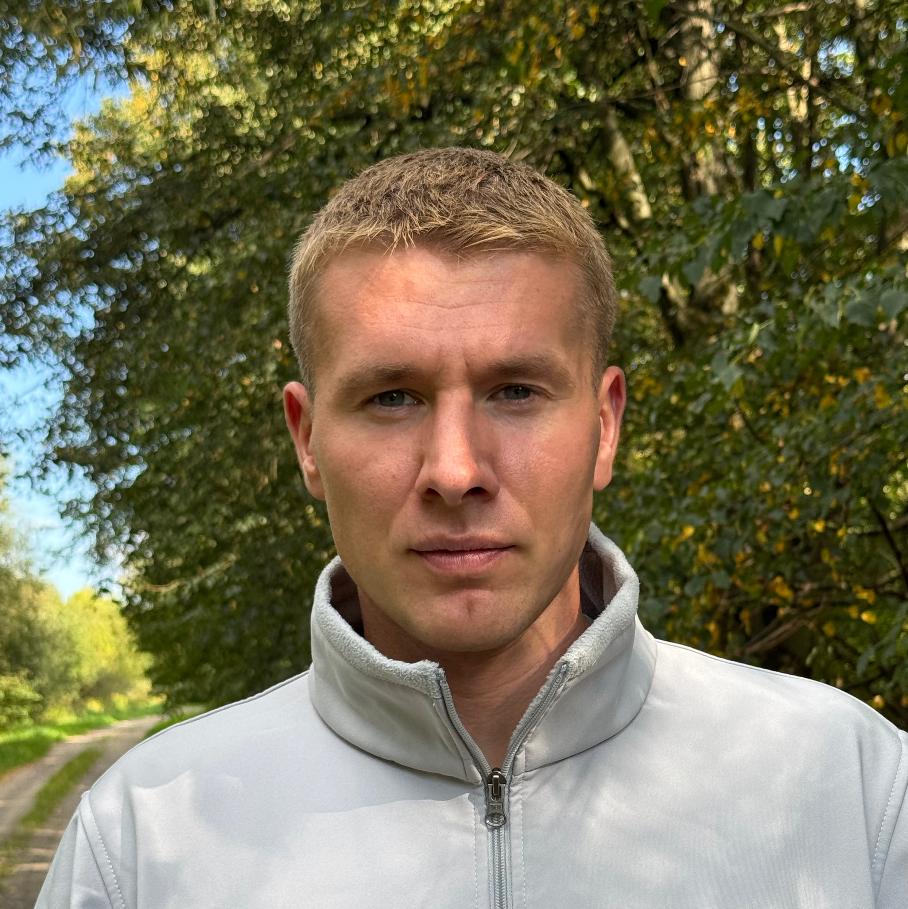

Wsparcie w trzeźwieniu 1:1. Rozmawiam z tymi, którzy w tym tkwią, i z tymi, którzy na to patrzą.
Kalendarz się nie otworzył? Otwórz w nowej karcie
Płacisz przy rezerwacji. Odwołanie do 24 godzin przed rozmową to pełny zwrot, później przenosimy rozmowę na inny termin. Pełne zasady w regulaminie.
Uwaga jest na Tobie. Na tym, co dzieje się teraz w Twoim życiu, z czym sobie nie radzisz i jakie próby już były.
Najpierw słucham i pytam. Pomagam uporządkować sytuację, zamiast od razu podsuwać rozwiązania.
Potem, jeśli to pasuje do Twojej sytuacji, mówię o tym, co przeszedłem. Co u mnie zadziałało, jakie błędy powtarzałem latami i co wreszcie pozwoliło mi żyć inaczej.
Nie przychodzisz po wykład. Przychodzisz po rozmowę, w której przez większość czasu mówisz Ty.
To, gdzie jesteś teraz, nie przesądza o tym, co będzie dalej.
Przez osiem lat uciekałem w alkohol i inne substancje. Z boku wyglądało to dobrze. Praca, sport, partnerka, ludzie, którzy niczego nie widzieli. Stwarzałem pozory i długo wydawało mi się, że skoro wszystko na zewnątrz gra, to nie jest tak źle.
Przez ostatnie cztery lata szukałem drogi. Obietnice, krótkie okresy abstynencji, powroty do tych samych schematów. Przełom nie przyszedł dlatego, że nagle wszystko zrozumiałem. Zacząłem słuchać ludzi, którzy chcieli dla mnie dobrze, przyjąłem pomoc i przestałem próbować przejść przez to sam.
Trzeźwieję od 27 grudnia 2024 roku. Pracuję z terapeutą, chodzę na mityngi, uczę się i popełniam błędy. Skończyłem studia podyplomowe z profilaktyki i terapii uzależnień i zdobywam kolejne kwalifikacje. Nie jestem terapeutą i nie udaję, że moje doświadczenie zastępuje leczenie.
Jeśli Twoja sytuacja wymaga lekarza, terapeuty, detoksu albo ośrodka, powiem Ci to wprost i pomogę zorientować się, gdzie szukać.
Rozmów nie nagrywam. Nie publikuję ich treści ani nie udostępniam osobom postronnym. W sytuacji bezpośredniego zagrożenia życia lub zdrowia bezpieczeństwo ma pierwszeństwo. Zasady przetwarzania danych opisuję w polityce prywatności.
Jeśli jesteś w bezpośrednim zagrożeniu życia lub zdrowia, nie rezerwuj rozmowy.
Zadzwoń pod 112 lub 999, albo zgłoś się na najbliższą izbę przyjęć. Całodobowe wsparcie telefoniczne: 800 70 2222, Centrum Wsparcia.